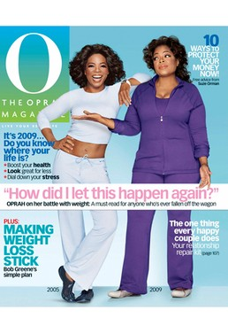

Obsessions and Lamentations #7 - African-American Women Edition
By Alan Shulman
2) Beyonce
1) Oprah gains weight – again
I’ve always been mildly frustrated by Oprah’s sainthood. I certainly don’t begrudge her the professional success she has earned (well yeah I do, but that’s not really the point of this piece), but I’m often appalled by the religious fervor her fans display when talking about her. I have no doubt that her endorsement of Obama, unlike any other endorsement in history, actually made a difference with women who are home in the late afternoon, or whenever her show is on. I’ve heard the way these folks talk about Oprah and her opinions. She is a trusted institutional figure in a time when trust in institutions is at a nadir. Maybe it’s my contrarian tendency, but when people start parroting the views of others without the proper note of skepticism, I begin to get antsy. That’s how the pretty cool thing that Jesus started got way out of control.

But this time around, it’s not some guy telling us about how we all have to be better people by embodying the principle of “turn the other cheek”; it’s a woman holding up a mirror to a narcissistic culture saying “Look, I’m just like you!” So she has turned her problematic relationship with spaghetti carbonara into a professional strength. In this country of unbridled excess where pointless consumption has been a patriotic duty, she has been the role model of “keeping it real”. This is something the now freakishly feline-looking Madonna could never be accused of, although nobody knows what her next career manipulation will be. Now that the bubble has burst it’s hard to know whether the devouring of too much béarnaise sauce will still be such an admirable trait as mere mortals cut back on their groceries, hunkering down for the big fall. Maybe she’ll publicize the billions she has lost in the market, just to show her viewers that she’s “just like them”.
2) Beyonce
Sure it’s easy to hate Beyonce, or any pop phenomenon that gets stuffed down our throats until we can bear it no longer, as seems to happen with the regularity of the seasons. It gets even easier when said phenom releases a supposedly confessional album on which they ironically adopt an alter ego (think Mariah’s Mimi) to let it all hang out, ie, I’m finally showing you exactly who I am by first declaring that I’m actually somebody else and have been all along. Inevitably, erudite critics start puzzling over the nature and causes of their success with the simpleminded masses. Maybe I’m not sophisticated, but I think I can boil it down pretty quickly using her new single, Single Ladies (Put a Ring On It), as a template. 1) First of all, the song is totally awesome. If you’re in a bar, have had a few beers, and are not moving uncontrollably when this piece of pure pop perfection comes on, then you should make an appointment with your psychiatrist to discuss unhealthy levels of sexual repression, 2) She looks great in a black leotard, 3) She can shake what the good lord gave her with the best of them. It’s that simple folks. No need to pontificate over racial or gender politics, or even her message of empowerment, which as this particular song illustrates, is muddled at best. It’s a tale as old as time, or at least as old as Elvis. When the sound and the look converge, its power over us is absolute. End of story.
3) Bessie Smith
But while we’re on the subject, maybe now would be a good time to recommend that you get ahold of Send Me To The ‘lectric Chair, by Bessie Smith. If you want to talk about contributions to world culture of lasting value, made by African-American women, this might be a good place to start, if not temporally, then as a source of inspiration. The power of her unamplified voice is astonishing, and the insistence with which she pleads “Judge, Judge, please Mr. Judge, send me to the ‘lectric chair”, is something you have to hear to understand. Despite her warnings, her man was caught cheating again, so she took her knife, slit his throat and sat down next to his writhing body, laughing hysterically. But rather than ask for mercy and forgiveness, she begs for death. After all, it’s what she deserves and if the judge entertained any thoughts of giving her “99 years in jail” then he should just forget it and let her fry. Talk about empowerment! Of course what makes it special is the vulnerability peaking out from behind the authoritative delivery. She loved him and now she’s desperate to die, not only to mete out justice but to end her suffering. It’s a spectacular performance of a perfect blues.
9 December, 2008 - 18:54 — Alan Shulman